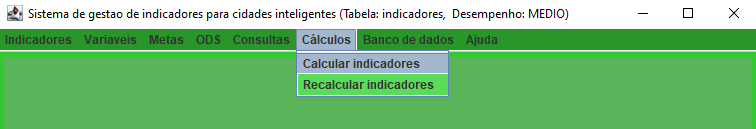

Como utilizar o SGICI
Login
Após concluir a instalação do SGICI, você pode começar a utilizá-lo executando o programa. Ao abri-lo, será direcionado para uma interface de login onde deverá fornecer o nome de usuário, senha e nome da base de dados a ser utilizada. Se não possuir uma tabela específica, deixe o campo em branco. É possível selecionar o nível de desempenho do programa, relacionado ao número de threads a serem utilizadas: "BAIXO" (2 threads), "MEDIO" (5 threads) e "ALTO" (10 threads). Além disso, há a opção de abrir o tutorial ao conectar-se ao banco de dados.
Figura 1: Interface de login
Calcular indicadores
Na parte superior do programa há uma barra de menus com diversas opções, entre elas: Indicadores, Variáveis, Metas, ODS, Consultas, Cálculos, Banco de dados e Ajuda. Para calcular os indicadores, basta clicar em Cálculos e selecionar a opção Calcular Indicadores.
Figura 2: Barra de menu, calcular indicadores
Nessa interface, você poderá selecionar os indicadores que deseja calcular e escolher se quer realizar o cálculo para um município específico ou para todos os municípios. Caso selecione a opção para um município específico, será necessário informar o CEP do município, o ano para o cálculo dos indicadores e a quantidade de anos para a busca retroativa das variáveis. Se selecionar a opção para todos os municípios, não será necessário informar o CEP. Após inserir todas as informações necessárias, clique em Consultar para realizar o cálculo dos indicadores.

Figura 3: Calcular indicadores para um município

Figura 4: Calcular indicadores para todos os municípios
Resultados
Ao finalizar o cálculo dos indicadores, uma nova interface será exibida para escolher o método de exibição dos resultados: tabela ou gráfico de barras.
Figura 5: Interface de escolha do método de exibição dos resultados
Ao selecionar a opção de exibição dos indicadores em forma de tabela, uma nova interface será apresentada com duas tabelas distintas. Na tabela superior, todos os indicadores calculados serão exibidos em uma tabela com informações detalhadas, incluindo o código do indicador, número da ODS, número da meta, nome do indicador, código do município, nome do município, nome da unidade federativa, ano, resultado, valor oficial e indicador padrão. Cada indicador possui um botão que, ao ser clicado, exibe uma interface com as variáveis utilizadas no cálculo do indicador. Indicadores calculados somente com valores oficiais serão marcados como "true" e terão sua cor na tabela em verde, enquanto que indicadores marcados como "false" terão a cor vermelha. Indicadores padrão serão marcados com a cor azul, e os demais com a cor amarela.
Já na tabela inferior, serão exibidos os indicadores que não foram calculados. Nessa tabela, é possível visualizar informações como o código do indicador, nome do indicador, método de cálculo, código da variável, nome da variável, ano, valor da variável e valor oficial. É possível editar os indicadores que estão sem valor ou com valor oficial "false", e recalcular o indicador com as novas informações. As linhas correspondentes a cada indicador terão a cor amarela, enquanto as linhas com as variáveis utilizadas no cálculo terão a cor branca.

Figura 6: Interface para exibição dos resultados em forma de tabelas
Ao selecionar a opção de exibição dos indicadores em formato de gráfico de barras, uma nova interface será apresentada com um gráfico de barras e uma legenda contendo o nome e o código dos indicadores correspondentes. No gráfico, somente os indicadores com resultado e valores entre 0 e 100 serão exibidos. Também é possível filtrar o gráfico de acordo com as ODS dos indicadores.

Figura 7: Interface para exibição dos resultados em forma de gráfico de barras.
Além disso, o programa oferece ainda diversas outras funcionalidades que podem ser vistas na seção Funcionalidades.